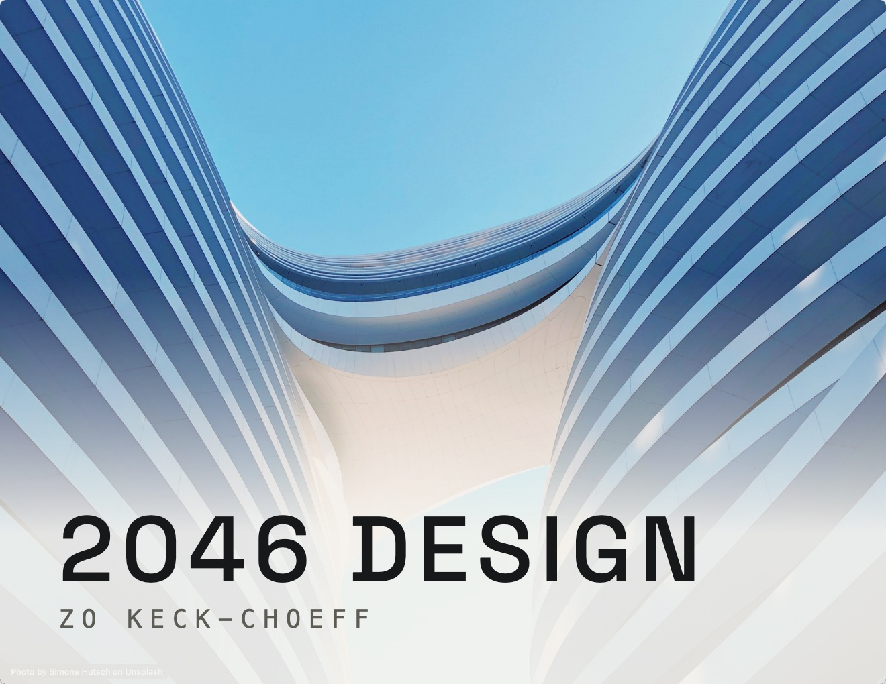

3 Scales of Design in 2046

Open the presentation →This presentation also acts as a portfolio, showcasing the 3 final products that I reached after using a unique generative process. This process inspired the forms of the products and structures using an iterative technique in supercraft.ai, where I started without any preconceived notions of what I wanted to make, instead taking inspiration from nature, culture, and formal shapes. This was made to explore creating architecture as well as product design.
Buddha Clock Concept

This concept features a fully working clock with hour and minute hands, powered by a double A battery. It started off as a sketch of a random shape and then the idea of wanting to make a clock. From there I was drawing and generating different clocks until I created a sketch that I liked. I used a program to convert my sketch into a 3d stl file. This allowed me to create the arms of the clock. These arms as well as a buddha state were 3d printed to connect to a main 3d printed housing. The buddha was made in the same program, then sculpted and shaped to be the main anchor as it tapes/attaches down to a surface while holding the clock off of the side. This was made to explore my creativity, furniture design, 3d printing, and make something functional.
Abstract 9


Abstract to come: what it is, how it was made, and why it exists.